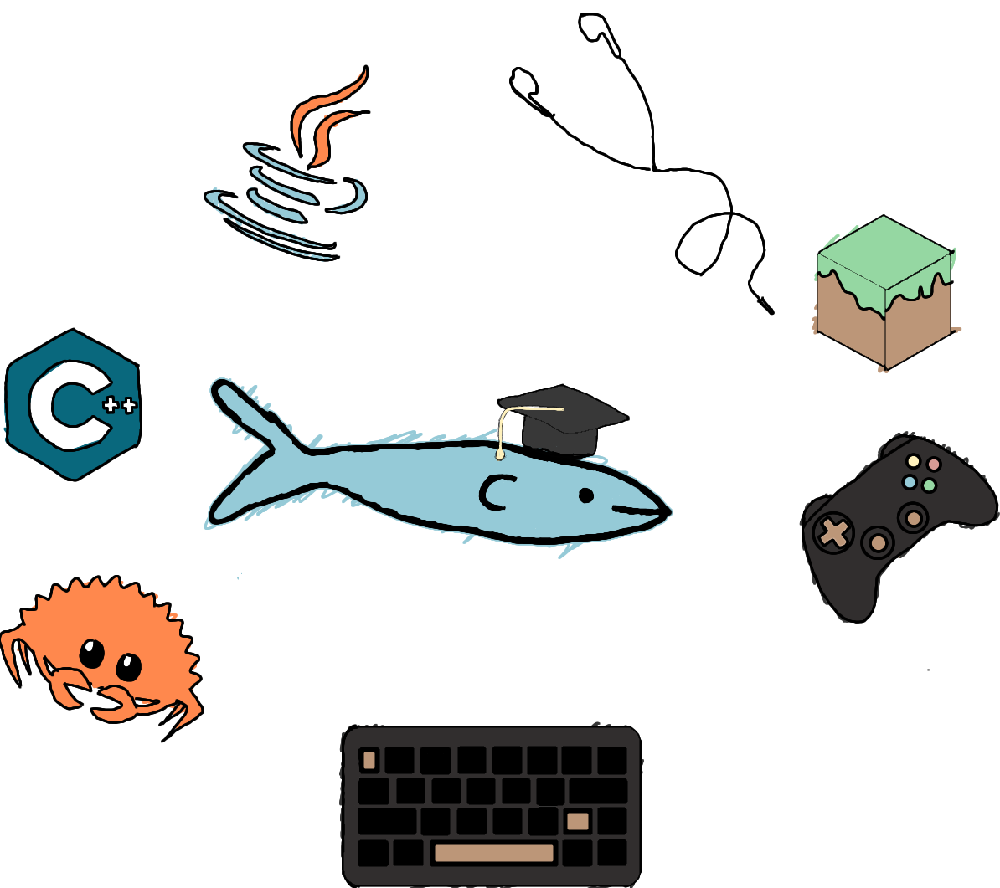

WELCOME!
Hi, I am Yanbo! A CS student at Stony Brook University, and currently a lab assistant at the Embedded Systems Design Lab. I am interested in competitive programming, embedded systems, and driver development (it's like magic)!
Right now, I am strengthening my fundamentals in data structures and problem solving while building a more capable development workflow. I have been learning Rust, container tools, and Linux, with the goal of turning those skills into projects I can be proud of.
Outside of school, I enjoy playing video games, particularly sandboxes and gachas (😢).

Recent Activities
May 28, 2026
Started working on enyay-oj, a Rust online judge. You can find out more on GitHub!
Feb 19, 2026

I joined the ICPC foundation as a problem solving intern! Check out my Codeforces repositiory to see some of my solutions!